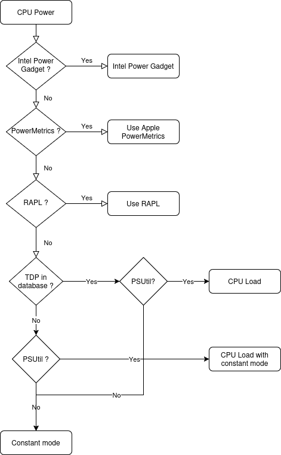

Methodology
Carbon dioxide (CO₂) emissions, expressed as kilograms of CO₂-equivalents [CO₂eq], are the product of two main factors :
C = Carbon Intensity of the electricity consumed for computation: quantified as g of CO₂ emitted per kilowatt-hour of electricity.
E = Energy Consumed by the computational infrastructure: quantified as kilowatt-hours.
Carbon dioxide emissions (CO₂eq) can then be calculated as C * E
Carbon Intensity
Carbon Intensity of the consumed electricity is calculated as a weighted average of the emissions from the different energy sources that are used to generate electricity, including fossil fuels and renewables. In this toolkit, the fossil fuels coal, petroleum, and natural gas are associated with specific carbon intensities: a known amount of carbon dioxide is emitted for each kilowatt-hour of electricity generated. Renewable or low-carbon fuels include solar power, hydroelectricity, biomass, geothermal, and more. The nearby energy grid contains a mixture of fossil fuels and low-carbon energy sources, called the Energy Mix. Based on the mix of energy sources in the local grid, the Carbon Intensity of the electricity consumed can be computed.

When available, CodeCarbon uses global carbon intensity of electricity per cloud provider ( here ) or per country ( here ).
If we don’t have the global carbon intensity or electricity of a country, but we have its electricity mix, we used to compute the carbon intensity of electricity using this table:
Energy Source |
Carbon Intensity (kg/MWh) |
|---|---|
Coal |
995 |
Petroleum |
816 |
Natural Gas |
743 |
Geothermal |
38 |
Hydroelectricity |
26 |
Nuclear |
29 |
Solar |
48 |
Wind |
26 |
Then, for example, if the Energy Mix of the Grid Electricity is 25% Coal, 35% Petroleum, 26% Natural Gas and 14% Nuclear:
Net Carbon Intensity = 0.25 * 995 + 0.35 * 816 + 0.26 * 743 + 0.14 * 29 = 731.59 kgCO₂/kWh
But it doesn’t append anymore because Our World in Data now provides the global carbon intensity of electricity per country ( source ). Some countries is missing data for last year, so we use the previous year data available.
If ever we have neither the global carbon intensity of a country nor it’s electricity mix, we apply a world average of 475 gCO2.eq/KWh ( source ).
As you can see, we try to be as accurate as possible in estimating carbon intensity of electricity. Still there is room for improvement and all contributions are welcome.
Power Usage
Power supply to the underlying hardware is tracked at frequent time intervals. This is a configurable parameter
measure_power_secs, with default value 15 seconds, that can be passed when instantiating the emissions’ tracker.
Currently, the package supports the following hardware infrastructure.
GPU
Tracks Nvidia GPUs energy consumption using pynvml library (installed with the package).
RAM
CodeCarbon uses a 3 Watts for 8 GB ratio source . This measure is not satisfying and if ever you have an idea how to enhance it please do not hesitate to contribute. There is a discussion about it on github issues #717.
CPU
On Windows or Mac (Intel)
Tracks Intel processors energy consumption using the Intel Power Gadget. You need to install it yourself from this source . But has been discontinued. There is a discussion about it on github issues #457.
Apple Silicon Chips (M1, M2)
Apple Silicon Chips contain both the CPU and the GPU.
Codecarbon tracks Apple Silicon Chip energy consumption using powermetrics. It should be available natively on any mac.
However, this tool is only usable with sudo rights and to our current knowledge, there are no other options to track the energy consumption of the Apple Silicon Chip without administrative rights
(if you know of any solution for this do not hesitate and open an issue with your proposed solution).
To give sudo rights without having to enter a password each time, you can modify the sudoers file with the following command:
sudo visudo
Then add the following line at the end of the file:
username ALL = (root) NOPASSWD: /usr/bin/powermetrics
If you do not want to give sudo rights to your user, then CodeCarbon will fall back to constant mode to measure CPU energy consumption.
On Linux
Tracks Intel and AMD processor energy consumption from Intel RAPL files at /sys/class/powercap/intel-rapl/subsystem ( reference ).
All CPUs listed in this directory will be tracked.
Note: The Power Consumption will be tracked only if the RAPL files exist at the above-mentioned path and if the user has the necessary permissions to read them.
CPU hardware
The CPU die is the processing unit itself. It’s a piece of semiconductor that has been sculpted/etched/deposited by various manufacturing processes into a net of logic blocks that do stuff that makes computing possible1. The processor package is what you get when you buy a single processor. It contains one or more dies, plastic/ceramic housing for dies and gold-plated contacts that match those on your motherboard.
In Linux kernel, energy_uj is a current energy counter in micro joules. It is used to measure CPU core’s energy consumption.
Micro joules is then converted in kWh, with formulas kWh=energy * 10 ** (-6) * 2.77778e-7
For example, on a laptop with Intel(R) Core(TM) i7-7600U, Code Carbon will read two files : /sys/class/powercap/intel-rapl/intel-rapl:1/energy_uj and /sys/class/powercap/intel-rapl/intel-rapl:0/energy_uj
RAPL Metrics
RAPL stand for Running Average Power Limit, it is a feature of processors (CPU) that provide the energy consumption of the processor.
See https://blog.chih.me/read-cpu-power-with-RAPL.html for more information.
Despite the name Intel RAPL, it support AMD processors since kernel 5.8.
It is some files in /sys/class/powercap/intel-rapl/subsystem/ that give the energy consumption of the CPU, and sometime RAM. There are folder for each domain, and in each folder there are a file name with the name of the domain and a energy_uj for the amount of energy in micro-joules.
The drawback of RAPL is that not every CPU use it the same way. We focus on the package domain, but some CPU have more domain like core, uncore, dram, psys, gpu, psys and psys-io.
For example : - Intel put all the physical cores consumption in core and the package include core. - For AMD, core have very low energy, so we don’t know if it is included in the package or not.
Our friend from Scaphandre, a tool to monitor energy consumption, have a good article about RAPL https://hubblo-org.github.io/scaphandre-documentation/explanations/rapl-domains.html and also a discussion with good references: https://github.com/hubblo-org/scaphandre/issues/116#issuecomment-854453231 and point out that this topic is not well documented.
https://user-images.githubusercontent.com/894892/120764898-ecf07280-c518-11eb-9155-92780cabcf52.png Source :“RAPL in Action: Experiences in Using RAPL for Power Measurements,” (K. N. Khan, M. Hirki, T. Niemi, J. K. Nurminen, and Z. Ou, ACM Trans. Model. Perform. Eval. Comput. Syst., vol. 3, no. 2, pp. 1–26, Apr. 2018, doi: 10.1145/3177754.)
{kind=link}
Metric comparison
Desktop computer with AMD Ryzen Threadripper 1950X 16-Core (32 threads) Processor. Power plug measure when idle (10% CPU): 125 W package-0-die-0 : 68 W package-0-die-1 : 68 W CodeCarbon : 137 W
Power plug measure when loaded (100% CPU): 256 W - 125W in idle = 131 W CorWatt PkgWatt
133.13 169.82 7.54 169.82
CodeCarbon : 330 W package-0-die-0 : 166 W package-0-die-1 : 166 W
RAPL: 234 sec. Joule Counter Range, at 280 Watts
CPU metrics priority
CodeCarbon will first try to read the energy consumption of the CPU from low level interface like RAPL or powermetrics.
If none of the tracking tools are available, CodeCarbon will be switched to a fallback mode:
It will first detect which CPU hardware is currently in use, and then map it to a data source listing 2000+ Intel and AMD CPUs and their corresponding thermal design powers (TDPs).
If the CPU is not found in the data source, a global constant will be applied.
If
psutilis available, CodeCarbon will try to estimate the energy consumption from the TDP and the CPU load.CodeCarbon assumes that 50% of the TDP will be the average power consumption to make this approximation.
Here is a drawing of the fallback mode:
The code doing this is available in codecarbon/core/resource_tracker.py.
The net Energy Used is the net power supply consumed during the compute time, measured as kWh.
We compute energy consumption as the product of the power consumed and the time the power was consumed for. The formula is:
Energy = Power * Time
References
Energy Usage Reports: Environmental awareness as part of algorithmic accountability
How CodeCarbon Works
CodeCarbon uses a scheduler that, by default, calls for a measure every 15 seconds, so it has no significant overhead.
The measure itself is fast and CodeCarbon is designed to be as light as possible with a small memory footprint.
The scheduler is started when the first start method is called and stopped when stop method is called.
Estimation of Equivalent Usage Emissions
The CodeCarbon dashboard provides equivalent emissions and energy usage comparisons to help users better understand the carbon impact of their activities. These comparisons are based on the following assumptions:
Car Usage
Emission factor: 0.12 kgCO₂ per kilometer driven.
This value is derived from the average emissions of a European passenger car under normal driving conditions.
Source : European Environment Agency
TV Usage
Energy consumption: 138 Wh per day based on average use.
This assumes: - An average daily usage of 6.5 hours. - A modern television with a power consumption of approximately 21.2 W per hour.
US Citizen Weekly Emissions
Annual emissions: 13.3 tons of CO₂ equivalent per year for an average US citizen.
Weekly emissions: This value is divided by the 52 weeks in a year to estimate weekly emissions:
Source : IEA CO2 total emissions per capita by region, 2000-2023
Calculation Formula
The equivalent emissions are calculated using this formula:
For example:
Car Usage: 1 kWh of energy consumption is approximately equivalent to: - 8.33 kilometers driven by a car (1 ÷ 0.12). - 11.9 hours of TV usage (1 ÷ 0.084), if emissions are considered.
US Citizen Emissions: - 1 kWh of energy consumption can be compared to a fraction of the average weekly emissions of a US citizen:
These estimates are approximate and subject to regional variations in: - Grid emissions intensity. - Vehicle efficiencies.
Source Code
The emission factors used are defined in the CodeCarbon source code. They are based on publicly available data and general assumptions.